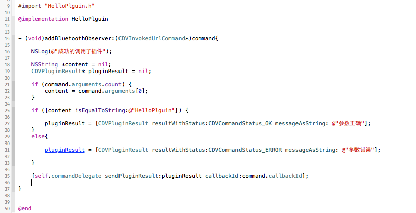
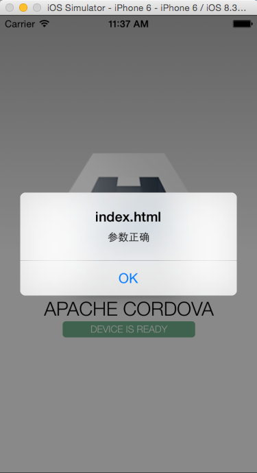
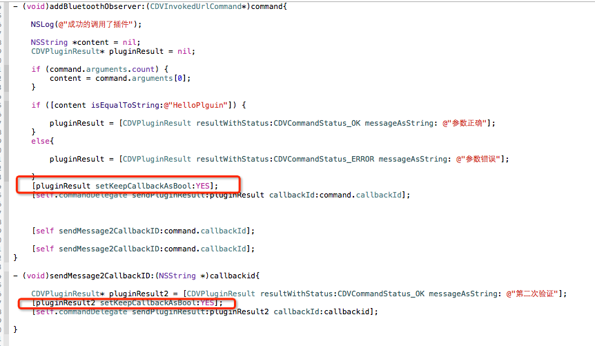

update: 2015-04-28
标准插件形式Demo地址：cordova-plugin-test
主要是JS的回调，附Demo地址。
编写插件方法
-
html里面调用已经写过了，只是没有对数据进行处理，
CDVInvokedUrlCommand这个类里有两个重要的参数。-
arguments用于接收JS传过来的参数。
-
callbackId用于记录JS回调代码块的ID，主要用它来回调JS代码。
-
-
插件判断传过来的第一个参数是否为
HelloPlguin，是就回调成功函数，反之失败。代码如下：
-
运行效果如下： 
重复回调JS函数
-
我想实现多次回调JS代码，于是我就天真的这样写：
[self.commandDelegate sendPluginResult:pluginResult callbackId:command.callbackId]; [self.commandDelegate sendPluginResult:pluginResult callbackId:command.callbackId];发现并不能回调多次，第二次调用时PhoneGap认为记录的这条
callbackId已经回调成功了，所以就不会继续执行。 -
然后这样写就实现了多次调用：

参考：phoneGap开发IOS,JS调用IOS方法/phoneGap插件开发
Demo地址：JEPlguinDemo